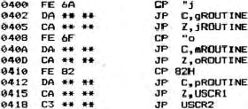

extension code. Any calls to NAS-SYS or SYS-EX routines from
within the extension code will require a number of stack levels
to be available.
Suggested routine to extend SYS-EX at offset 0400H

Compatibility with NAS-SYS monitors
Compatibility with both NAS-SYS 1 and NAS-SYS 3 monitors
is achieved (with one exception) by calling the NAS-SYS routines
in the NAS-SYS recommended manner.
The one exception is that SYS-EX requires access to the
absolute address of the NAS-SYS INLS routine, which is different
in the two versions of NAS-SYS, This is achieved by locating the
instruction in the main monitor loop PARSE (by using a variant
of the SYS-EX FCEP1 routine) which follows the NAS-SYS call to
INLS in both versions of the monitor. The address of INLS is
taken from the two bytes prior ta this common instruction.
User entry point summary
Address (start
of SYS-EX plus)
| Entry Point |
|---|
| 0000H | . . . . . . | Cold start when installed at B000H
only |
| 0003H | . . . . . . | Called routine entry point |
| 0005H | . . . . . . | Cold start |
| 000BH | . . . . . . | Warm start |
| 01E0H | . . . . . . | BASIC named program file entry point
cold start when installed at B000H
only |
| 0003H | . . . . . . | Called routine entry point |
| 0005H | . . . . . . | Cold start |
| 000BH | . . . . . . | Warm start |
| 01E0H | . . . . . . | BASIC named program file entry point |